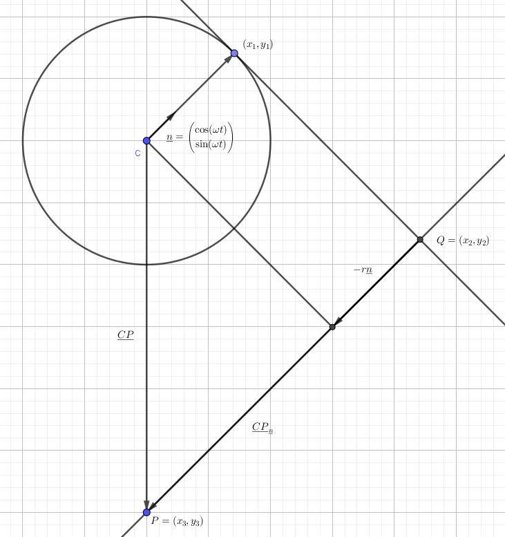

This section is aimed at students in upper secondary education in the Danish
school system, some objects will be simplified and some details omitted.
Tangent Line Theorem for Circular Motion
Consider the circular motion represented by its parametric form
$$\begin{pmatrix} x\\y\end{pmatrix}=\begin{pmatrix}x_0\\y_0\end{pmatrix}+
\begin{pmatrix} \cos(\omega t)\\\sin(\omega t)\end{pmatrix}$$
Then the tangent line can be represented in parametric form as
$$\begin{pmatrix} x\\y\end{pmatrix}=\begin{pmatrix}x_0\\y_0\end{pmatrix}+
\begin{pmatrix} \cos(\omega t)-\omega t\sin(\omega t)\\\sin(\omega t)+
\omega t\cos(\omega t)\end{pmatrix}$$
which is a result of differentiating the parametric form to gain the
tangent vector which becomes the directional vector for our line. The
normal form of the tangent line is
$$\cos(\omega t)x+\sin(\omega t)y+c=0$$
where
$$-c=\cos(\omega t)x_0+\sin(\omega t)y_0+r$$
The following image will be a nice reference for all proofs.

Proof.
The parametric vector of the parametric form will act as a normal
vector for our tangent line, as it's orthogonal to it. This immediately
yields
$$\cos(\omega t)x+\sin(\omega t)y+c=0$$
The only thing that's left is showing the formula for \(c\) then. For a
normal vector with coordinates \(a\) and \(b\), the general formula is
\begin{align}
-c=&ax_1+by_1\\
=&\cos(\omega t)(x_0+r\cos(\omega t))+\sin(\omega t)(y_0+
r\sin(\omega t))\\
=&\cos(\omega t)x_0+\sin(\omega t)y_0+r\cos^2(\omega t)+
r\sin^2(\omega t)\\
=&\cos(\omega t)x_0+\sin(\omega t)y_0+r
\end{align}
by the idiot rule, where \((x_1,y_1)\) is a point on the line, in this
case the intersection point of the tangent line and circle.
Distance to the Tangent Line
Then the distance from the tangent line to any arbitrary point \(P=
(p_1,p_2)\) will then be
\begin{align}
dist(P,l)=&|\cos(\omega t)p_1+\sin(\omega t)p_2+c|\\
=&\left|\begin{pmatrix}\cos(\omega t)\\\sin(\omega t)\end{pmatrix}\bullet
\begin{pmatrix}p_1-x_0\\p_2-y_0\end{pmatrix}-r\right|\\
\end{align}
Proof 1.
Consider the point on the tangent line that is closest to \(P\) and call
it \(Q=(q_1,q_2)\), then the vector \(\underline{QP}\) is parallel with
the normal vector for the tangent line, which means that
\begin{align}
\pm|\underline{QP}||\underline{n}|=&\underline{QP}\bullet\underline{n}\\
=&\begin{pmatrix}p_1-q_1\\p_2-q_2\end{pmatrix}\bullet\begin{pmatrix}
\cos(\omega t)\\\sin(\omega t)\end{pmatrix}\\
=&(p_1-q_1)\cos(\omega t)+(p_2-q_2)\sin(\omega t)\\
=&p_1\cos(\omega t)+p_2\sin(\omega t)-q_1\cos(\omega t)-q_2\sin(\omega t)\\
=&p_1\cos(\omega t)+p_2\sin(\omega t)+c
\end{align}
since \(Q=(q_1,q_2)\) was chosen on the line and taking the - if the
vectors are antiparallel.
Proof 2.
Consider the vector projection of the vector \(\underline{CP}\), where
\(C=(x_0,y_0)\) is the center of our circular motion, onto the normal
vector to the tangent line, \(\underline{CP}_{\underline{n}}\). Then
the distance to the point will be the length of this projection added
to the radius of the circle, i.e.
\begin{align}
d=&|\underline{CP}_{\underline{n}}-r\underline{n}|\\
=&\left|\frac{\underline{CP}\bullet\underline{n}}{
\cancel{|\underline{n}|^2}}\underline{n}-r\underline{n}\right|\\
=&|(\underline{CP}\bullet\underline{n}-r)\cancel{\underline{n}}|\\
=&|(p_1-x_0)\cos(\omega t)+(p_2-y_0)\sin(\omega t)-r\\
=&|p_1\cos(\omega t)+p_2\sin(\omega t)-x_0\cos(\omega t)-
y_0\sin(\omega t)-r|\\
=&|p_1\cos(\omega t)+p_2\sin(\omega t)+c|
\end{align}
where the cancellations stem from the fact that our normal vector just
happens to be a unit vector.